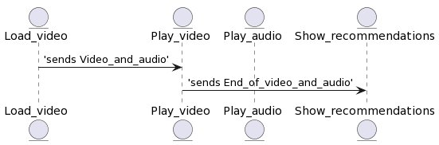
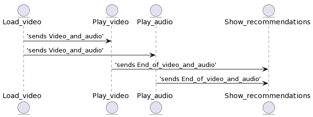
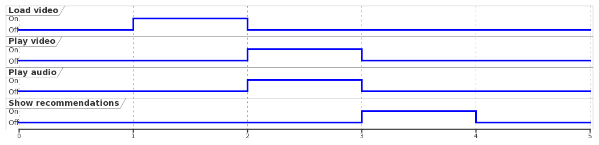

You can try to imitate a model that results in either of these diagrams:
Because modeling is a creative process, there are multiple solutions that use more or less triggers and messages. As you can see, the timing diagram is the same in both of the following samples regardless of the solution you choose.
Solution 1


Solution 2

